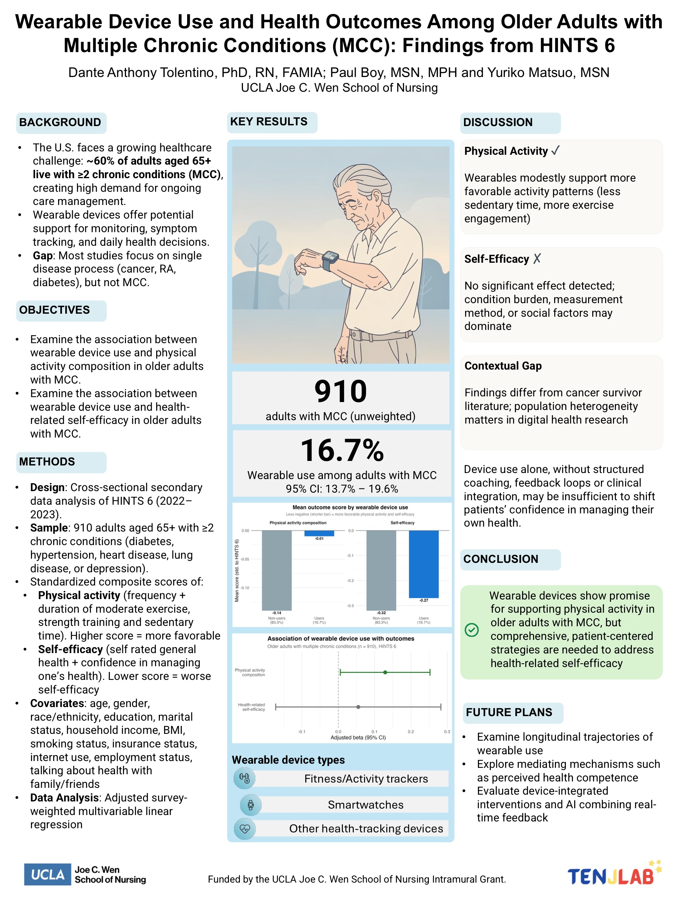

Poster · AMIA Amplify Clinical Informatics Conference · 2026
Wearables are widely promoted for health, but among older adults juggling several chronic conditions, few actually use them, and this study asks whether using one is linked to more activity and greater confidence in managing health.
Most older adults live with more than one chronic condition, and wearables such as fitness trackers are often suggested to help. Using a national survey of 910 adults aged 65 and older, this study looked at whether using a wearable was associated with being more physically active and feeling more confident managing one’s own health. Because the data capture a single point in time, the study describes associations rather than proving that wearables cause these benefits.
Cross-sectional secondary analysis of the national HINTS 6 dataset (2022–2023), using survey-weighted multivariable regression adjusted for many factors, including age, income, education, BMI, and internet use.
Only about 17% of these older adults used a wearable, so the work highlights both an access gap and the need to understand who benefits from these tools.
Only a small share of older adults with multiple conditions used a wearable, the very group that might benefit.
The study examined how wearable use relates to physical activity and self-efficacy in managing health.
It looks at people with multiple conditions together, rather than a single illness in isolation.
